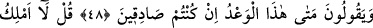
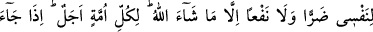
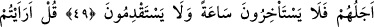
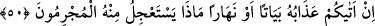
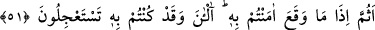
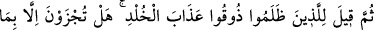
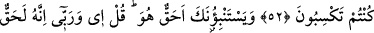
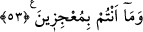
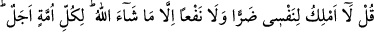
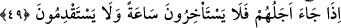

ALLAH’IN AZÂBI
48. “Eğer doğru iseniz bu vaad (azab) ne zaman?” derler.
49. De ki: “Ben kendime dahi Allah’ın dilediğinden başka ne bir zarar ne de bir
yarar sağlama gücüne sahibim.” Her ümmetin takdir edilmiş bir eceli vardır.
Ecelleri gelince, ne bir an geri kalırlar, ne de ileri giderler.
50. De ki: “Söyleyin bana, O’nun azâbı size geceleyin ya da gündüzün gelirse!
Suçlular bundan hangisini acele ister?”
51. “Olan olduktan sonra mı ona inanacaksınız? Şimdi mi? Halbuki onu acele
istiyordunuz!”
52. Sonra zulmedenlere: “Sürekli azâbı tadın” denilir. Sadece kazandığınız
şeylerden başkasının karşılığını mı bulacaksınız?”
53. “Sâhiden o gerçek mi?” diye senden soruyorlar. De ki: “Evet, Rabb’im hakkı
için o gerçektir. Siz Allah’ı âciz bırakamazsınız.”
Dalga geçip uzak görerek: “Sen ve sana uyanlar “eğer doğru iseniz bu vaad” ettiğiniz
azap “ne zaman?” hemen başımıza gelsin!” derler.
Rivâyet edilir ki yukarıdaki 46. âyet nâzil olduktan sonra Mekke kâfirleri vaad edilen
azâbı acele istediler. Bunun üzerine bu âyet nâzil oldu.